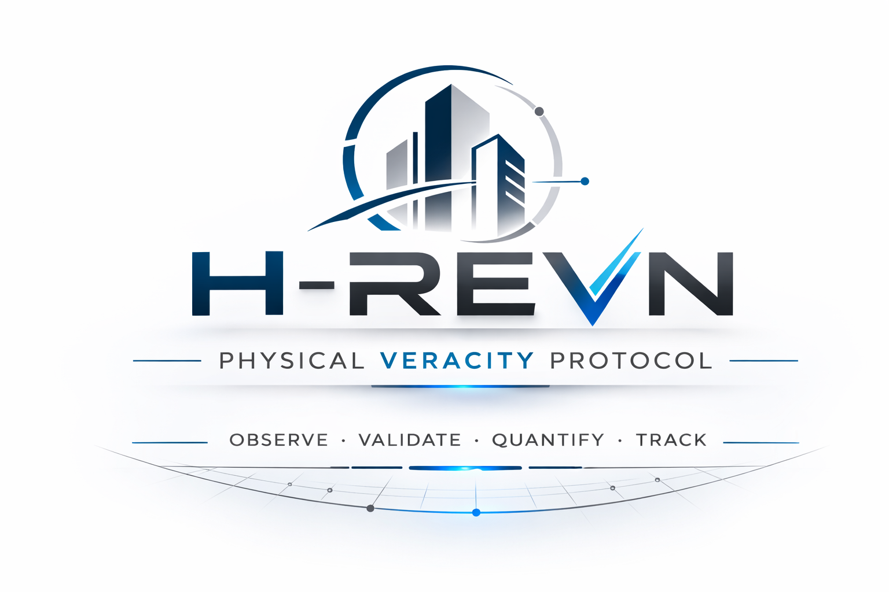

Auditoría de activos críticos
Supervisión y verificación del estado de infraestructuras o activos técnicos.

Infraestructura técnica verificable
Infraestructura PVM para la validación verificable de activos y procesos técnicos.
H-REVN es un protocolo técnico diseñado para reducir la brecha de confianza entre la ejecución de proyectos en el entorno físico y su registro en sistemas digitales. Mediante el mecanismo PVM (Physical Veracity Mechanism), el protocolo permite asegurar la integridad verificable de evidencias técnicas asociadas a activos, ubicaciones y procesos.
Explorar el protocoloLos sistemas actuales de documentación técnica dependen de informes, imágenes y archivos que pueden ser difíciles de auditar o verificar de forma independiente. H-REVN propone estructurar estas evidencias en un "Evidence Bundle" verificable, facilitando procesos de auditoría técnica más transparentes y robustos.
Supervisión y verificación del estado de infraestructuras o activos técnicos.
Registro verificable de operaciones de mantenimiento o ejecución técnica.
Soporte documental para la verificación técnica de proyectos financiados con fondos públicos.
H-REVN se encuentra actualmente en fase de investigación y desarrollo de su motor de referencia. El protocolo está siendo validado en entornos controlados como base para futuras implementaciones en sistemas de gestión de evidencias técnicas.